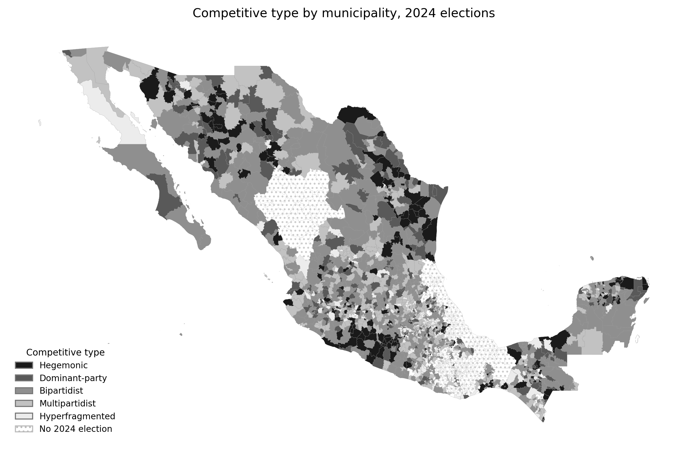

Book projectProyecto de libro
Two Transformations
National Breakthroughs and Local Party-System Change in Mexico
How do national electoral breakthroughs become durable transformations of local party competition?
¿Cómo se convierten las irrupciones electorales nacionales en transformaciones duraderas de la competencia partidista local?
Parties · Subnational politics · Party-system changePartidos · Política subnacional · Cambio del sistema de partidos